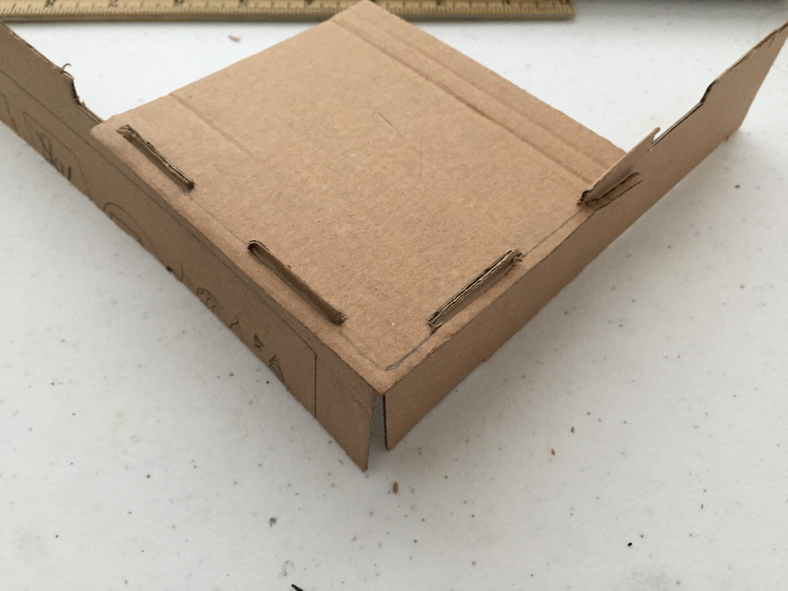

Phase 1: Introduction, Reading and Simple Tesselation amd Module Exercise
Modular
Artist's Statement
I had folded some origami pieces before, but it was mainly for hobby, and precision with origami was never my forte--when I tried puttin the pieces together, I found that precision plays quite a role in this modularity considering the whole piece is built on the idea of each piece being the same. However, while the nitpicking hasn't subsided, the overal aesthetic of the piece isn't severly damged by each individual's imperfection--the beauty that comes from the contribution of each pieces made quite a spetacle.
Modified Module

Artist's Statement
When I started modifying the module, I didn't have a concept in mind--it was more to the nature of explorin the possiblities of the module. Eventually, the piece started to take form of an animal, and the real work started there--I put them together, then took apart many times trying to build a chicken shape. For the tail, I wanted to make a traditional shape of a rooster's tail, but with the limited amount of module on hand, I settled for the current shape. Overall, I'm quite happy how this small exercise turned out.
Tessellation
Artist's Statement
Initially I used Illustrator to create the shape rather than hand craft. Of course that led to me redoing the piece. When I was redoing the piece, I wanted to explore other pattern instead of recreating the same pattern I had created with AI. I took inspiration from the famous Japanese artwork--"The Greate Wave of Kanagawa"--and created my own landscape of mountains and wave onto the module. I later combined this module with the previous AI file to created a tessellation pattern that I used as background for this website. You can see it to your left.
Modifiled Tessellation

Artist's Statement
In modifying the tessellatioon, I wanted to created a mermaid shape. It was quite tricky to push the narrative, until I notice that I could use the red tessellation as a depiction of hair; from then on, it was smooth sailing.
Phase 2: 3D Fastener BrainStorming Designs, Mockups and design approuches
Joinery Mockups
Key joint


Tenon joint



Artist's Statement
When I started the project, my focus was to research joints that we can potentially use rather than making as many as possible. Base on our past interaction with paper,I concluded that our group wouldn't be working with papers for our project anytime soon. Our group also did a good job communicating between one another so that we wouldn't repeat a tried joinery. Upon researching wood joineries, I decided to make mockups of joints that utilize key and tenons since they could be easily taken apart and I'm intrigued by their design. The result could have been better--the imperfections from hand craft still show--but for the time being, I have gotten a better understanding of these joints.